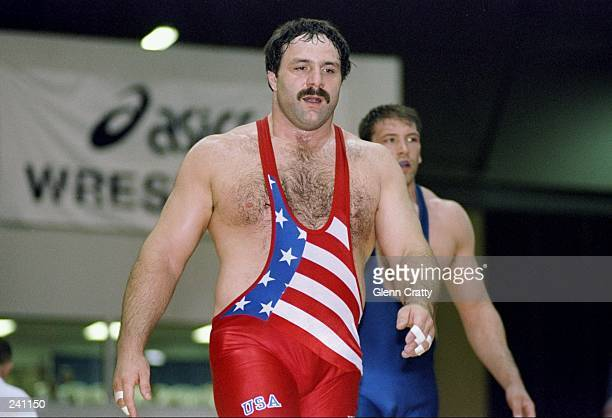
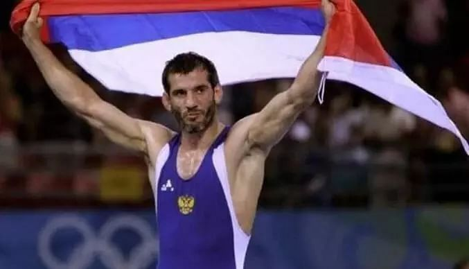
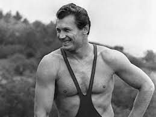

Futbol başarıları ve başarısızlıklarıyla komplike,dünyada en çok takip edilen spor dallarından biri olduğunu bahsetmiştik.Şimdi gelin futbol denince akla gelen 3 isme bakalım.

Bruce Baumgartner (USA) Şimdiye kadar hiç kimse serbest stilde dört Olimpiyat altın madalyası kazanmadı. Dört Olimpiyat Oyununda etkinlikte sadece iki erkek herhangi bir renkte madalya talep etti. Baumgartner, 1984 ve 1992'de altın kazanan ve 1988'de gümüş, 1996'da Atlanta'da bronz madalya kazanan adamlardan biri. 1992'deki altınları, onu mağlup eden David Gobejishvili'den (Sovyetler Birliği) intikam alırken özellikle tatmin edici olmalı. onu 1988 finalinde.

Buvaisar Satiev (Russia) Kesinlikle tüm zamanların en büyük serbest güreşçilerinden biri olan Satiev, uluslararası kariyerinde sadece iki kez kaybetti. En iyi üç periyot sisteminin tuhaflıkları nedeniyle, sadece bir kez geride kaldı. Ne yazık ki onun için, o bir maç 2000 Olimpiyatları'nda American Brandon Slay'in onu 4-3 yenmesiyle geldi. Bu kayıp, sıralı turda Satiev'i turnuvadan eledi. 1996, 2004 ve 2008 yıllarında altın madalya kazanan adam Sydney'den eli boş dönmek zorunda kaldı.

Aleksandr Medved (Soviet Union) Soyadı Rusça'da "ayı" anlamına geliyor ve Medved, üç Olimpiyat altın madalyası yolunda rakiplerini hırpaladı. 1964'te Türkiye'den Ahmet Ayık ile berabere kalmasına rağmen olimpiyat yarışmasında hiç yenilmedi. Ayik, 1968'de Medved daha yüksek bir ağırlık sınıfına geçtiğinde altın madalya kazandı. 2001 yılında 20. yüzyılın en büyük Beyaz Rusya atleti olarak seçildi ve FILA Uluslararası Güreş Onur Listesi'ne giren ilk 10 kişiden biri oldu.